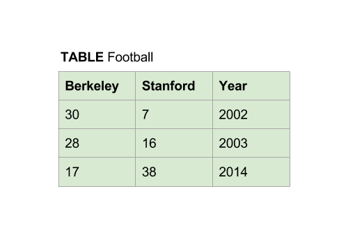

Lab 9: Exceptions and SQL
Due at 11:59pm on 04/22/2016.
Starter Files
Download lab09.zip. Inside the archive, you will find starter files for the questions in this lab, along with a copy of the OK autograder.
Submission
By the end of this lab, you should have submitted the lab with
python3 ok --submit. You may submit more than once before the
deadline; only the final submission will be graded.
- To receive credit for this lab, you must complete Questions 1-3 in lab09.py and 4-7 in lab09.sql and submit through OK.
- Question 8 is extra practice. It can be found in the lab09_extra.py file. It is recommended that you complete this problem on your own time.
Exceptions
Exceptions allow us to try a chunk of code, and then catch any errors that might come up. If we do catch an exception, we can run an alternative set of instructions. This construct is very useful in many situations.
try:
<try suite>
except Exception as e:
<except suite>
else:
<else suite>
finally:
<finally suite>Notice that we can catch the exception as e. This assigns the name e to
the exception object. This can be helpful when we want to give extra
information on what happened. For example, we can print(e) inside the
except clause.
Also, we have an optional else case. The else suite is executed if the
try suite finishes without any exceptions.
We also have an optional finally clause, which is always executed, whether or not an exception is thrown. We generally don't need to use the else and finally controls in this class.
When we write exception statements, we generally don't just use the word Exception as above. Rather, we figure out the specific type of exception that we want to handle, such as TypeError or ZeroDivisionError. To figure out which type of exception you are trying to handle, you can type purposely wrong things into the interpreter (such as 'hi' + 5 or 1 / 0) and see what kind of exception Python spits out.
Question 1: Quiet get
You have seen that indexing a list with an index that is not contained in the list
generates and exception, as does looking up a key that does not exist in a dictionary.
However, the get method of dict is more forgiving. If the key is not in the
dictionary it returns a value that you provide, defaulting to None. Use
exception handling in the function quiet_get to obtain similar behavior
for both lists and dictionaries. We have provide the try part of the
statement using indexing, rather than get. You need to write the except clause.
def quiet_get(data, selector, missing=None):
"""Return data[selector] if it exists, otherwise missing.
>>> quiet_get([1,2,3], 1)
2
>>> quiet_get([1,2,3], 4)
>>> quiet_get({'a':2, 'b':5}, 'a', -1)
2
>>> quiet_get({'a':2, 'b':5}, 'd', -1)
-1
"""
try:
return data[selector]
"*** YOUR CODE HERE ***"
except (KeyError, IndexError):
return missingUse OK to test your code:
python3 ok -q quiet_getQuestion 2: No KeyErrors Allowed
If we try to look up a key that does not exist in a dictionary, then
Python will raise a KeyError. Write the function avoid_keyerror which returns
returns the value mapped to key in the dictionary. If key does
not exist, print 'Avoid Exception' and map key to the string 'no value'.
def avoid_keyerror(dictionary, key):
""" Returns the value associated with key in dictionary. If key
does not exist in the dictionary, print out 'Avoid Exception' and
map it to the string 'no value'.
>>> d = {1: 'one', 3: 'three', 5: 'five'}
>>> avoid_keyerror(d, 3)
'three'
>>> avoid_keyerror(d, 4)
Avoid Exception
>>> d[4]
'no value'
"""
"*** YOUR CODE HERE ***"
try:
return dictionary[key]
except KeyError as e:
print("Avoid Exception")
dictionary[key] = 'no value'Use OK to test your code:
python3 ok -q avoid_keyerrorQuestion 3: Safe use of higher order functions
When writing higher order functions that take functions as arguments, there
is always the possibility that the function that is passed in may have an
error that results in an exception. In this problem we will use exception
handling to deal with that. The function safe_sum is passed a function
and a sequence; it is to return the sum of the results of applyng the function
to the elements in the sequence. However, for elements in the sequence where
the function throws an exception, the missing value is added into the
partial sum.
We have started the solution by writing a wrapper function that is used to catch the exception. Complete it.
def safe_sum(fun, seq, missing=0):
"""Return the sum of fun applied to elements in seq using missing as a replacement
for those elements on which fun throws an exception
>>> safe_sum(lambda x: 1/x, [1, 2, 0, 3, None, "bad"])
1.8333333333333333
"""
def wrap(fun, x):
"*** YOUR CODE HERE ***"
try:
return fun(x)
except (ZeroDivisionError, TypeError, ValueError) :
return missing
psum = 0
for x in seq:
psum += wrap(fun, x)
return psumUse OK to test your code:
python3 ok -q safe_sumSQL
Setup
The simplest way to start using SQLite is to download a precompiled binary from the SQLite website. The latest version of SQLite at the time of writing is 3.9.2, but you can check for additional updates on the website.
Windows
- Visit the download page linked above and navigate to the section Precompiled Binaries for Windows. Click on the link sqlite-shell-win32-x86-*.zip to download the binary.
- Unzip the file. There should be a
sqlite3.exefile in the directory after extraction. Navigate to the folder containing the
sqlite3.exefile and check that the version is at least 3.8.3:$ cd path/to/sqlite $ ./sqlite3 --version 3.9.2 2015-11-02 18:31:15 bda77dda9697c463c3d0704014d51627fceee328
Mac OS X Yosemite (10.10) or El Capitan (10.11)
SQLite comes pre-installed. Check that you have a version that's greater than 3.8.3:
$ sqlite3
SQLite version 3.8.5Mac OS X Mavericks (10.9) or older
SQLite comes pre-installed, but it is the wrong version.
- Visit the download page linked above and navigate to the section Precompiled Binaries for Mac OS X (x86). Click on the link sqlite-shell-osx-x86-*.zip to download the binary.
- Unzip the file. There should be a
sqlite3file in the directory after extraction. Navigate to the folder containing the
sqlite3file and check that the version is at least 3.8.3:$ cd path/to/sqlite $ ./sqlite3 --version 3.9.2 2015-11-02 18:31:15 bda77dda9697c463c3d0704014d51627fceee328
Ubuntu
The easiest way to use SQLite on Ubuntu is to install it straight from the native repositories (the version will be slightly behind the most recent release):
$ sudo apt-get install sqlite3
$ sqlite3 --version
3.8.6 2014-08-15 11:46:33 9491ba7d738528f168657adb43a198238abde19eUsage
Note: If you downloaded a precompiled binary above, make sure that
sqlite3.exefile is in the same directory as your.sqlfile. (Extract and move it out from the zip file you downloaded.)
After writing your code in the .sql file, you can test and verify
your output in Terminal or Git Bash with one of the two following
commands.
1.) Runs your code and then exits SQLite immediately afterwards.
Ubuntu / Mac OS X (Yosemite or newer)
sqlite3 < lab09.sqlWindows / Mac OS X (Mavericks or older)
./sqlite3 < lab09.sql
2.) Runs your code and keeps SQLite open for further commands, which
is similar to running Python code with the interactive -i flag.
You can type .help to see some of the commands you can run.
Ubuntu / Mac OS X (Yosemite or newer)
sqlite3 --init lab09.sqlWindows / Mac OS X (Mavericks or older)
./sqlite3 --init lab09.sql
To exit out of SQLite after using the second command, you can hit
Ctrl-D type .exit or .quit.
SQL Basics
Creating Tables
Two ways of creating tables in SQL are from scratch or from existing tables.
Below creates the table from scratch, without referencing any other existing tables.
CREATE TABLE [table_name] as
SELECT [val1] as [column1], [val2] as [column2], ... UNION
SELECT [val3] , [val4] , ... UNION
SELECT [val5] , [val6] , ...;Note: You do not need to repeat the
askeyword in subsequent SELECT statements when creating the table.
Here is an example where we construct a table with the CREATE TABLE
statement:
CREATE TABLE Football as
SELECT 30 as Berkeley, 7 as Stanford, 2002 as Year UNION
SELECT 28, 16, 2003 UNION
SELECT 17, 38, 2014;
Here we have created a table called Football, which has three attributes
(columns): Berkeley, Stanford, and Year. We can later access the
values from this table by referencing the table's columns.
To create tables from existing tables, the SELECT command references
another table.
Selecting From Tables
More commonly, we will create new tables by selecting specific columns
that we want from existing tables. SELECT statements can include optional
clauses such as:
FROM: tells SQL which tables to select values fromWHERE: filters by some conditionORDER BY: enforces an ordering by some attribute or attributes (usually a column or columns)LIMIT: limits the number of rows in the output tableSELECT [columns] FROM [tables] WHERE [condition] ORDER BY [attributes] LIMIT [limit]
Notes about the arguments:
[columns]: a comma separated list of the columns to select,*can be used to select all of them[tables]: a comma separated list of tables to select values from[condition]: a Boolean expression[attributes]: a comma separated list of attributes, which are usually columns, but could also be named aggregates (which we will learn later)[limit]: an integer
We can select all the values of an attribute from a table with the SELECT
statement. In addition, we can apply a filter using the WHERE clause. Here,
we filter by Year > 2002, which makes the SELECT statement keep only the
rows in the table whose Year value is greater than 2002.
sqlite> SELECT Berkeley FROM Football WHERE Year > 2002;
17
28Here we selected Berkeley's score for all years after 2002.
Expressions in SQL
Here are some fundamental operations you can perform:
- comparisons:
=,>,<,<=,>=,<>("not equal") - booleans:
and,or - arithmatic:
+,-,*,/
We can also perform string concatenation using ||, which behaves
similarly to + on strings in Python.
sqlite> select "hello" || " " || "world"
hello worldData
In each question below, you will define a new table based on the following tables.
create table parents as
select "abraham" as parent, "barack" as child union
select "abraham" , "clinton" union
select "delano" , "herbert" union
select "fillmore" , "abraham" union
select "fillmore" , "delano" union
select "fillmore" , "grover" union
select "eisenhower" , "fillmore";
create table dogs as
select "abraham" as name, "long" as fur, 26 as height union
select "barack" , "short" , 52 union
select "clinton" , "long" , 47 union
select "delano" , "long" , 46 union
select "eisenhower" , "short" , 35 union
select "fillmore" , "curly" , 32 union
select "grover" , "short" , 28 union
select "herbert" , "curly" , 31;
create table sizes as
select "toy" as size, 24 as min, 28 as max union
select "mini", 28, 35 union
select "medium", 35, 45 union
select "standard", 45, 60;Your tables should still perform correctly even if the values in these tables change. For example, if you are asked to list all dogs with a name that starts with h, you should write:
select name from dogs where "h" <= name and name < "i";Instead of assuming that the dogs table has only the data above and writing
select "herbert";The former query would still be correct if the name grover were changed to
hoover or a row was added with the name harry.
Get started with sqlite
Following the instructions in the usage section
above, start up sqlite3 initializing it with lab09.sql. Try
out .help and then .tables and .schema parents. These .
commands are particular to .sqlite; they are not part of SQL.
Try out some SQL statements.
How do you get the whole parents table? Give it a try.
select * from parents;Looking at the data, which dogs are children of "abraham" ?
"barack" and "clinton"Write a SQL statement to get the children of the dog "abraham".
select child from parents where parent = "abraham";Write a SQL statement to select the parents of curly-furred dogs.
select parent from parents, dogs
where child = name and fur = "curly";Try it out. Did you get:
eisenhower
delanoIn the following questions, update lab09.sql with your
solution.
Question 4
Some people just love little dogs. Create ashort_dogs table with
three columns, name, fur, and size, containing the dogs of
height < 40 cm.
-- All short dogs
create table short_dogs as
-- REPLACE THIS LINE
select name, fur, height as size from dogs
where height < 40;-- Example:
select name from short_dogs;
-- Expected output:
-- abraham
-- eisenhower
-- fillmore
-- grover
-- herbertTest your solution with OK:
python3 ok -q shortQuestion 5
The Fédération Cynologique Internationale classifies a standard poodle as over 45 cm and up to 60 cm. Thesizes table describes this and other such
classifications, where a dog must be over the min and less than or equal to
the max in height to qualify as a size.
Create a size_of_dogs table with two columns, one for each dog's name and
another for its size.
-- The size of each dog
create table size_of_dogs as
-- REPLACE THIS LINE
select name, size from dogs, sizes
where height > min and height <= max;-- Example:
select name from size_of_dogs where size="toy" or size="mini";
-- Expected output:
-- abraham
-- eisenhower
-- fillmore
-- grover
-- herbertTest your solution with OK:
python3 ok -q smallQuestion 6
Create a tableby_height that has a column of the names of all dogs that have
a parent, ordered by the height of the parent from tallest parent to shortest
parent.
-- All dogs with parents ordered by decreasing height of their parent
create table by_height as
-- REPLACE THIS LINE
select child from parents, dogs where name = parent order by -height;For example, fillmore has a parent (eisenhower) with height 35, and so
should appear before grover who has a parent (fillmore) with height 32.
The names of dogs with parents of the same height should appear together in any
order. For example, barack and clinton should both appear at the end, but
either one can come before the other.
-- Example:
select * from by_height;
-- Expected output:
-- herbert
-- fillmore
-- abraham
-- delano
-- grover
-- barack
-- clintonTest your solution with OK:
python3 ok -q parent_heightQuestion 7
Create a table tallest that includes the height and name of every dog
that shares the 10's digit of its height with at least one other dog and has
the highest 1's digit of all dogs that have the same 10's digit.
-- Height and name of every dog that shares height 10's digit
-- with at least one other dog and has the highest 1's digit of all dogs
-- that have the same 10's digit
create table tallest as
-- REPLACE THIS LINE
select max(height), name from dogs group by height/10 having count(*) > 1;-- Example:
select * from tallest;
-- Expected output:
-- 28|grover
-- 35|eisenhower
-- 47|clintonExplanation: grover is the tallest 20-something dog. eisenhower is the
tallest 30-something dog. clinton is the tallest 40-something dog. barack
is not included because there are no other 50-something dogs.
Test your solution with OK:
python3 ok -q tallestExtra Questions
The following questions are for extra practice — they can be found in the the lab09_extra.py file. It is recommended that you complete these problems on your own time.
Question 8: Back to Newton
Way back in the book in Section 1.6.5 there was a lovely section on using
higher order functions to implement Newton's method for finding a zero of a
function. Go back and read that. Newton's method reappears in
Section 3.3.1
using exception handling to deal with the case where the
method attempts to evaluate the function or its derivative at points
where it is undefined and throws an error. Implement the IterImproveError
and the suggested updates to the code for Newton's method.
Try this technique out for the function sqrt(x). Does it still provide a
reasonable approximation? Can you find a much better way of approaching the
zero of the function while dealing with errors outside the domain?